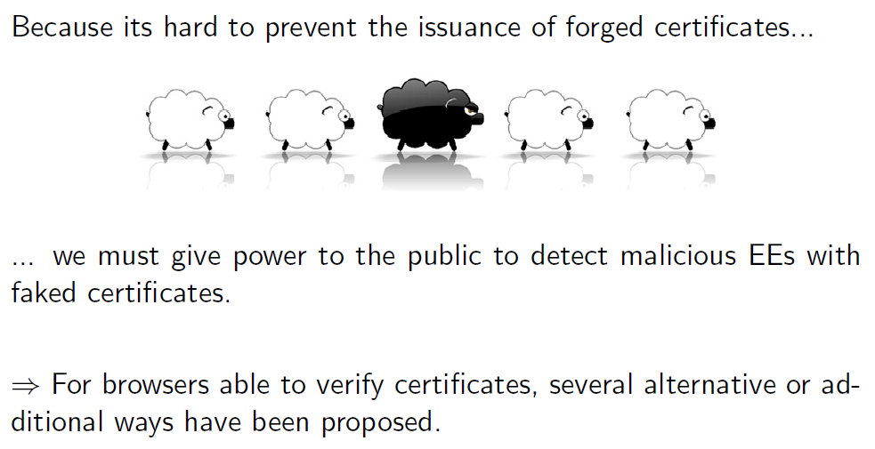

X.509 CA Alternatives¶
links: AC2 TOC - Centralized public-key infrastructures - Index
How to identify black sheeps?¶

Alternative 1: DNSSEC / DANE¶
DANE (DNS-based Authentication of Named Entities)¶
DANE does not provide any security today and it is very uncertain if it ever will.
Wikipedia: TLS/SSL encryption is currently based on certificates issued by certificate authorities (CAs). Within the last few years, a number of CA providers suffered serious security breaches, allowing the issuance of certificates for well-known domains to those who don't own those domains. Trusting a large number of CAs might be a problem because any breached CA could issue a certificate for any domain name. DANE enables the administrator of a domain name to certify the keys used in that domain's TLS clients or servers by storing them in the Domain Name System (DNS). DANE needs the DNS records to be signed with DNSSEC for its security model to work.
Additionally DANE allows a domain owner to specify which CA is allowed to issue certificates for a particular resource, which solves the problem of any CA being able to issue certificates for any domain.
DANE solves similar problems as:
- Certificate Transparency: Ensuring that rogue CAs cannot issue certificates without the permission of the domain holder without being detected
- DNS Certification Authority Authorization: Limiting which CAs can issue certificates for a given domain However, unlike DANE, those technologies have wide support from browsers.
DNSSEC¶
DNSSEC provides cryptographic authentication of data, authenticated denial of existence, and data integrity, but not availability or confidentiality.
For DNSSEC to work and provide security you need:
- a signed root
- a signed top level domain
- a domain broker that supports DNSSEC
- a DNS operator that supports DNSSEC
- a client that verifies DNSSEC
DNSSEC propagandists claim that a big percentage of TLDs are signed and that there are already a big amount of signed domains. This is completely irrelevant though as long as nobody is checking the signatures. Even if checking is enabled on the client and the signatures are valid today, that may not be true after a key rollover. This is the same issue as with TLS. How many users are you willing to burn by enabling this feature?
\(\rightarrow\) Client deployment of DNSSEC is very close to zero
DNSSEC signature verification happens in the DNS resolver but most clients don't have a DNS resolver which means the client would need to trust his DNS resolver (bad). Options would be that operating systems ship with DNS resolvers or applications ship with their own DNS resolver but that seems unlikely. It is not clear how to solve these issues.
Since DANE is building on top of DNSSEC functionality it can't work until DNSSEC is widely deployed.
Alternative 2: HTTP PublicKey Pinning (HPKP)¶
Wikipedia: HTTP Public Key Pinning (HPKP) is an obsolete Internet security mechanism delivered via an HTTP header which allows HTTPS websites to resist impersonation by attackers using misused or otherwise fraudulent digital certificates. A server uses it to deliver to the client (e.g. web browser) a set of hashes of public keys that must appear in the certificate chain of future connections to the same domain name.
For example, attackers might compromise a certificate authority, and then mis-issue certificates for a web origin. To combat this risk, the HTTPS web server serves a list of “pinned” public key hashes valid for a given time; on subsequent connections, during that validity time, clients expect the server to use one or more of those public keys in its certificate chain. If it does not, an error message is shown, which cannot be (easily) bypassed by the user.
The technique does not pin certificates, but public key hashes. This means that one can use the key pair to get a certificate from any certificate authority, when one has access to the private key. Also the user can pin public keys of root or intermediate certificates (created by certificate authorities), restricting site to certificates issued by the said certificate authority.
*Due to HPKP mechanism complexity and possibility of accidental misuse, in 2017 browsers deprecated and removed HPKP support in favor of Certificate Transparency.
- Always needs at least two keys because you need to be able to change your certificates in the future
- Implements a "Trust on First Use" TOFU protection
- Only usable for Web (HTTP)
- There is a proposal called TACK to do something similar on the TLS layer
- HPKP improves confidentiality but can be dangerous to availability
- If you loose your keys you may lock out your site visitors
- Needs careful planning of key management
Alternative 3: Certi ficate Transparency¶
- Public log with all certificates
- Certificate can contain log proof confirming that it has been added to a log
- When a browser sees a certificate that is not in the log it can raise alarm
- Certificate Transparency runs in soft-fail mode, it can't prevent misuse
- But it makes it hard to use malicious certificates without being noticed
Alternative 4: Certification Authority Authorization (CAA)¶
- CAA tells the client which CA is allowed for a domain
- Relies on DNS(SEC) security
- The configured CA must also still be trustworthy
Alternative 5: HTTP Strict Transport Security (HSTS)¶
- HSTS tells the browser to mark a page as HTTPS only for a defined timeframe
- Further prevents stripping attacks
- You can even pre-load your webpage as HTTPS only into Chrome and Firefox
Attacks through NTP
- HSTS protects a page for a defined timeframe
- System time is considered trustworthy, but it is not
- Delorean-Attack circumvents HSTS with NTP
- NTP provides no security (solutions: tlsdate, openntpd)
links: AC2 TOC - Centralized public-key infrastructures - Index